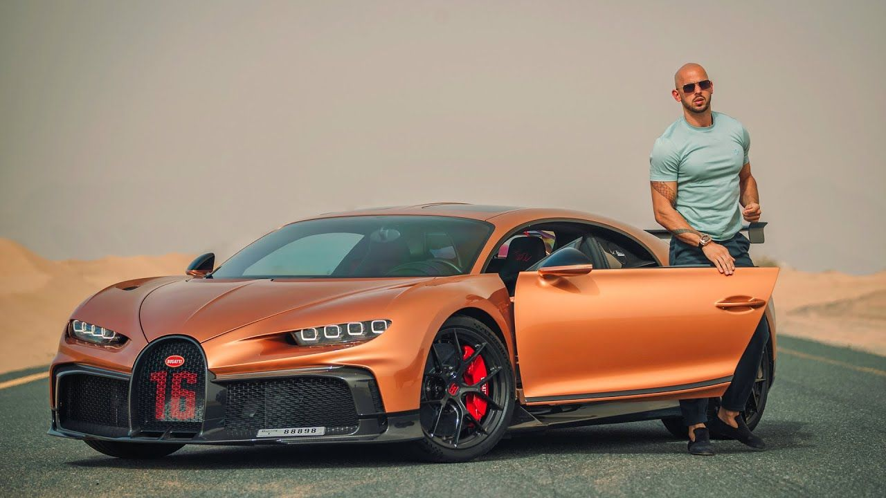

<Автомобил, разговорно се използва кола, е моторно превозно средство (МПС) с повече от две колела или гуми, обикновено четири (тоест безрелсово), предназначено за транспорт, придвижване, както и превозване на пътници и багаж; също понякога и товари (при лекотоварните автомобили или бусове).[1] Автомобилите се разделят на няколко основни групи: леки автомобили (за превозване на хора, обикновено 4 до 9 души) и лекотоварни автомобили; други типове са автобуси (за превозване на повече хора) и камиони (за превозване на товари), също тирове, както и специални автомобили (с монтирано специализирано оборудване, например такива за инвалиди, автокранове или пожарни коли).
Повечето автомобили имат четири колела, както и места за шофьор и поне един пътник до него, или най-често 3 до 4 пътника.
Решителна крачка към появата на съвременните автомобили с ДВГ е направена в Германия – през 1885 г. създателят на компания Mercedes-Benz Карл Бенц конструира в Манхайм своята първа триколка, а на 29 януари следващата година получава патент за нея. Обикновено това се приема за рождената дата на съвременния автомобил. Първото по-дълго пътуване с автомобил е извършено от Берта Бенц (съпруга на Карл Бенц) в началото на август 1888 г. – от Манхайм до Пфорцхайм и обратно.[5] От 1894 до 1902 г. Бенц продава първия серийно произвеждан модел. Карл Бенц със своя модел от 1886 г.
През 1886 г., независимо от Бенц, създателят на Daimler Готлиб Даймлер и конструкторът на двигатели Вилхелм Майбах конструират в Щутгарт собствен автомобил. Той е базиран на конска карета с добавен двигател и достига максимална скорост от 16 km/h. През 1888 – 1889 Зигфрид Маркус създава във Виена четириколесна кола, задвижвана с бензинов двигател. По същото време в Копенхаген Алберт Хамел конструира автомобил с двуцилиндров двигател.
ъпреки голямото разнообразие от произвеждани коли, основното правило е, че винаги има три основни части в устройството: двигател, шаси и купе. Двигателят е източник на механична енергия, който привежда автомобила в движение. В модерните автомобили, като правило, се използват бутални двигатели с вътрешно горене, в които процесът на изгаряне на горивото се извърша вътре в цилиндрите на двигателя. Шасито е комбинация от механизми, предназначени да прехвърлят въртящия момент от двигателя към задвижващите колела, за движение и контрол на автомобила. Шасито се състои от следните компоненти:
Трансмисията предава въртящия момент от двигателя към задвижващите колела;
Ходовата част позволява на автомобила да се движи и изглажда вибрациите. Състои се от рама, греди на мостовете, предно и задно окачване, колела и гуми;
Механизми за управление са кормило и спирачки.
Купето служи за настаняване на хора или товари. Купетата на леките автомобили и автобусите се състоят от салон за хора, купетата на товарните автомобили се състои от платформа за товари и кабина за хора. Купетата на автобусите и автомобилите изпълняват функцията на рамата в носещата система на превозното средство.
